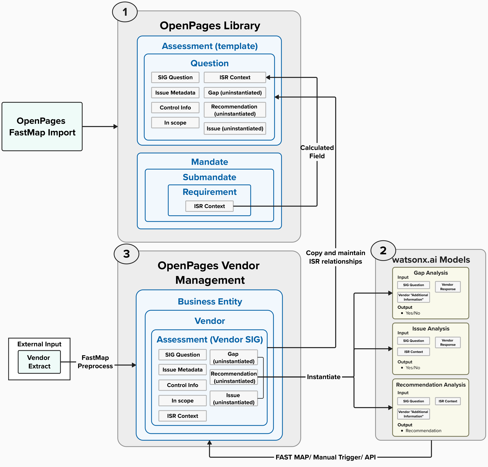

Overview
This solution’s key differentiator is its hybrid approach, which combines deterministic methods with interpretive techniques. Rather than relying solely on generative AI, this solution intentionally leverages the strengths of both approaches to deliver a more holistic, accurate, and economical solution. The deterministic component uses precise, programmatic logic to achieve specific outcomes, while the interpretive component harnesses generative AI to efficiently address scenarios that traditional methods would find overly tedious or prone to excessive edge cases. This synergy not only enhances overall performance but also saves valuable time.
This solution comprises three core components:
Data Sources:
- All the different data sources required to achieve the business outcomes for this solution.
Preprocessing Data:
- Transform raw data into actionable insights through a series of deterministic and interpretative steps, enabling generative AI to achieve optimal outcomes within OpenPages.
Configuring OpenPages:
- Utilize the processed data to set up the OpenPages platform while preserving critical relationships among key entities such as SIG questions, Internal Security Requirements, and ServiceNow Issues.
- Develop and deploy watsonx.ai prompts that leverage generative AI to identify issues and gaps, provide recommendations, and generate follow-up questions.
Solution Flow
Solution Components
Data Sources
The data sources leveraged in this solution are:
- Internal Security Requirements
- Enterprise security requirements designed to ensure compliance with organizational policies, organized into specific domains relevant to the SIG.
- ServiceNow Issue Catalog
- A catalog of relevant ServiceNow issues and its relevant metadata
- Blank SIG (Standardized Information Gathering) Questionnaire’
- Empty version of a SIG from 2024 with all the relevant headers populated
- Vendor SIG Questionnaires
- Vendor populated SIG questionnaires with the relevant information.
- Vendor KY3P Extract
- Vendor populated information from KY3P with the vendor’s response and Additional Comments (if provided).
Preprocess Data
The primary objective of preprocessing the source data was to create the Reference Data that accurately maps the relationships among SIG questions, contextual details from the Internal Security Requirements, and ServiceNow Issues which facilitated the data ingestion process into OpenPages.
This phase involved a comprehensive ETL process to cleanse and structure the data to create the Reference Data, and it comprises of four key parts:
- Configure vectorstore with Internal Security Requirements (ISR)
- Determine Relevant ServiceNow Issue
- Aggregate SIG Questions from SIG Questionnaires
- Build Reference Data and OpenPages FastMap Import
Configure vectorstore with Internal Security Requirements (ISR)
- Programmatically divide the Internal Security Requirements into a JSON structure by section, attaching relevant metadata—such as headings, subheadings, filenames, and summaries—to each segment.
- Embed the chunks structured within the JSON into a vectors.
- Ingest the vectors into a vectorstore with its metadata.
Determine Relevant ServiceNow Issue
- For this solution, we did not focus on content related to external attachments provided by vendors. Instead, our team utilized watsonx.ai to filter out document-dependent issues.
- Each SIG question belonged to a specific domain group. After filtering out document-dependent issues, we programmatically removed all unrelated domain issues by leveraging unique key identifiers for each domain, ensuring our focus remained solely on the relevant domain issues.
- Once all the irrelevant and out-of-scope issues were filtered out, our team leveraged watsonx.ai to identify the most relevant issue for each SIG Question.
Aggregate SIG Questions from SIG Questionnaires
- Aggregate all the SIG questions from the Blank SIG Questionnaire and Vendor SIG Questionnaire with the relevant metadata to populate in the Reference Data
Build Reference Data and OpenPages FastMap Import
The series of steps to build the Reference Data is as follows:
- Insert all the aggregated SIG questions and the appropriate headings from Aggregate SIG Questions from SIG Questionnaires step
- For each SIG question:
- search for the most relevant Internal Security Requirements (ISR) context from the vectorstore configured Configure vectorstore with ISR.
- After retrieving the most relevant context from the vector store, our team utilized another watsonx.ai Large Language Model (LLM) prompt to validate its relevance to the associated SIG question. If deemed relevant, the validated context was then used to populate the appropriate ISR context for the SIG question.
- Determine and populate the most relevant ServiceNow Issue from the ServiceNow Issue Catalog from Determine Relevant ServiceNow Issue Step
The series of steps to build the OpenPages FastMap Import is as follows:
- Programmatically populate the FastMap Import for SIG Questionnaire Template which consists of all the relevant SIG questions from the Reference Data
- Programmatically populate all the ISR context relationships to the appropriate SIG questions using the Reference Data.
- Programmatically populate all the SIG Question relationships to each question for the Assessment Template.
Configure OpenPages
The structure of IBM’s OpenPages platform with watsonx.ai allows an external compliance and security platform, KY3P, as an initial data input while providing as the platform which centralizes risk management and governance.
In this solution, OpenPages serves as the central platform for structured data management, while watsonx.ai enhances it with generative AI capabilities. By integrating third-party extracts, this approach enables access to additional data insights beyond the organization’s existing environment. It is ideal for organizations or teams seeking a unified solution that seamlessly integrates external data, enriches analytics, and extends watsonx.ai’s capabilities within a single platform.
This solution consists of three core components:
- Build OpenPages Library
- Configure OpenPages Vendor Management
- Deploy and integrate watsonx.ai models and its content.
